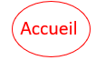

L'US Open est un tournoi du Grand Chelem, qui se déroule sur dur, à New York aux Etats-Unis
L'US Open est considéré comme le tournoi le plus abordable pour les outsiders, mais il est aussi le tournoi le plus dur en terme de condition physique ; notamment à cause du fait que le toit est retractable ce qui permet de jouer même lorsqu'il pleut.
Une des particularités aussi de ce tournoi c'est que c'est les Etats-Unis qui ont le plus de victoires en simple messieurs, et simple dames ; notamment grâce à ces deux joueurs :
- Le joueur le plus titré en simple messieurs est Pete Sampras, avec sept victoires. Un record égalé par Novak Djokovic qui a pourtant été exclu deux fois : pour ne pas s'être vacciné, et pour avoir tiré une balle sur une juge de ligne.
- La joueuse la plus titrée en simple dames est Serena Williams, avec six victoires.
1. Novak Djokovic : n°1 mondial qui a devancé Carlos Alcaraz pour le moment.
2. Carlos Alcaraz.
3. Daniil Medvedev.
4. Alexander Zverev
5. Casper Ruud
| |
 |